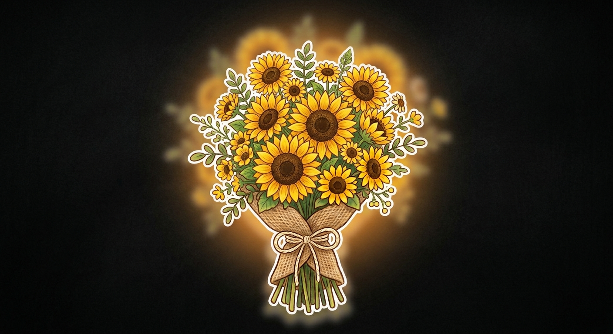
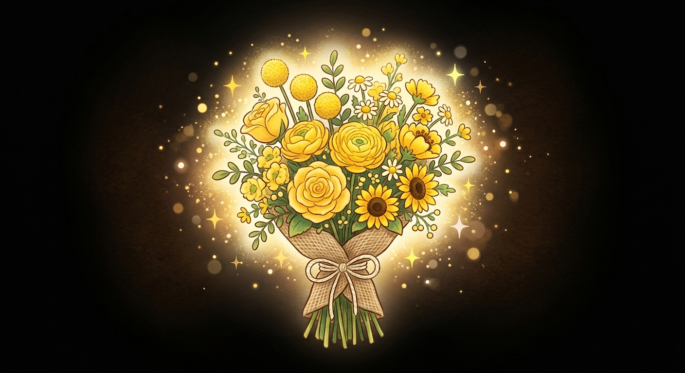
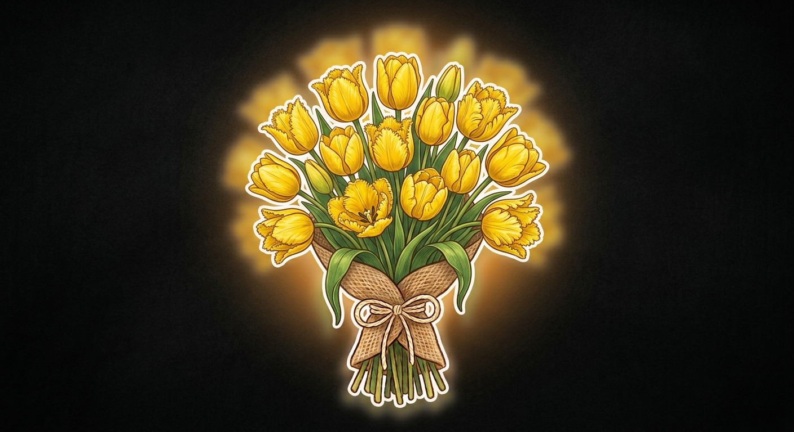

GIRASOLES

Regalar flores amarillas cada 21 de septiembre no es solo entregar un detalle, es regalar un pedazo de sol, una promesa de alegría y la certeza de que los mejores comienzos siempre florecen en primavera.

Esta tradición nació gracias a la combinación de una famosa serie de televisión y la llegada de la primavera. Todo comenzó con la telenovela argentina Floricienta. En la historia, la protagonista soñaba desde niña con que el amor de su vida le regalara un ramo de flores amarillas para demostrarle un sentimiento sincero y verdadero. La serie tenía una canción muy pegajosa llamada justamente «Flores Amarillas», que se volvió un éxito total. Años después, con el auge de redes sociales como TikTok, millones de jóvenes recordaron esta canción y comenzaron a ponerse de acuerdo para convertir ese sueño en realidad. Se fijó la fecha para el 21 de septiembre porque ese día empieza oficialmente la primavera en el hemisferio sur (en países como Argentina, Perú, Chile y Colombia). El color amarillo representa la luz del sol, la energía, la felicidad y el renacer que trae la primavera. Por eso, hoy en día regalar flores amarillas cada 21 de septiembre ya no es solo un gesto romántico de pareja, sino también un detalle especial entre amigos y familiares para desearse alegría, buena suerte y un excelente comienzo de etapa.


Porque el amarillo representa la energía vital del sol, la alegría, la calidez y el optimismo. A diferencia del rojo (asociado al amor romántico), el amarillo transmite amistad sincera, la celebración de un nuevo comienzo y el deseo de ver a alguien feliz sin necesidad de una intención amorosa explícita.
El famoso movimiento de los girasoles hacia el sol se llama heliotropismo. Lo curioso es que solo los girasoles jóvenes giran de este a oeste durante el día para captar luz. Cuando la planta llega a su etapa madura y florece, deja de seguir al sol y se queda mirando fijamente hacia el este para atraer a los polinizadores con el calor de la mañana.
Estudios en psicología del color demuestran que el amarillo estimula la producción de serotonina. Tener flores de este color cerca ayuda a reducir el estrés, mejorar el ánimo y favorecer el bienestar emocional.